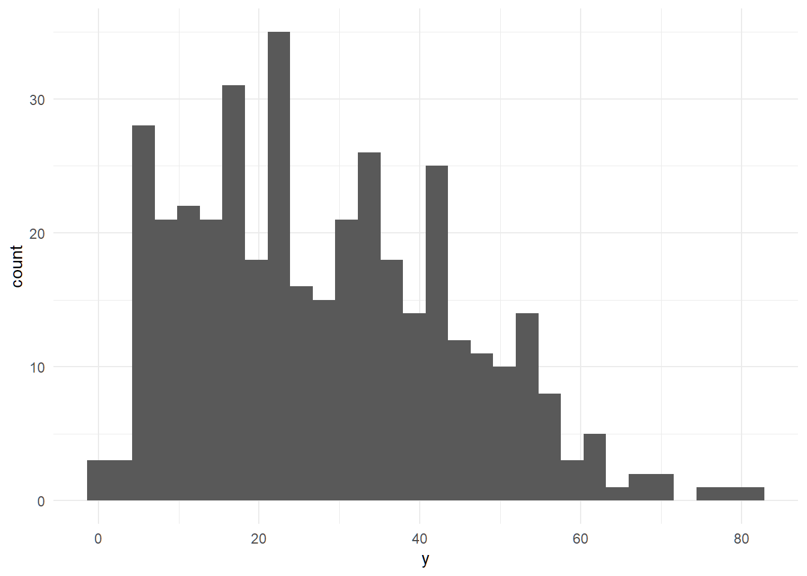
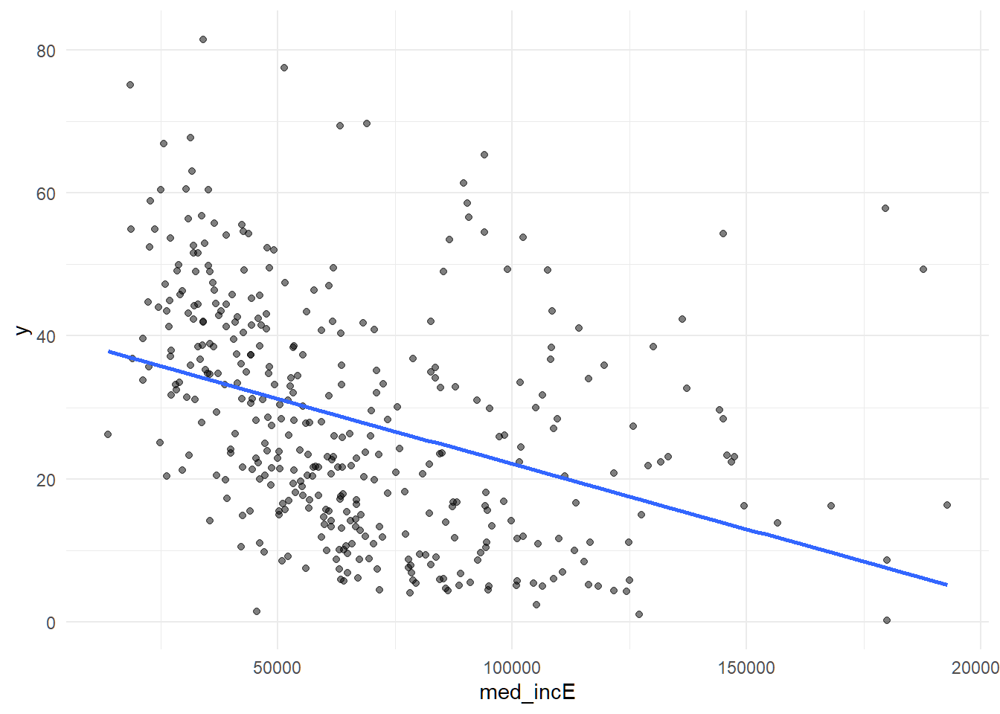
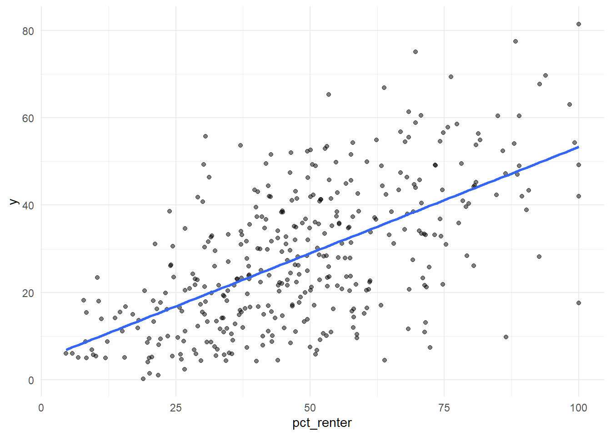
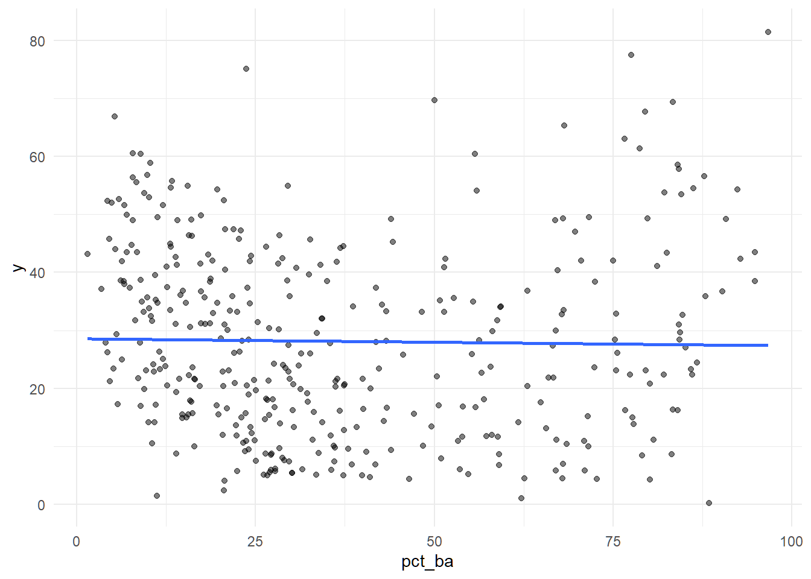
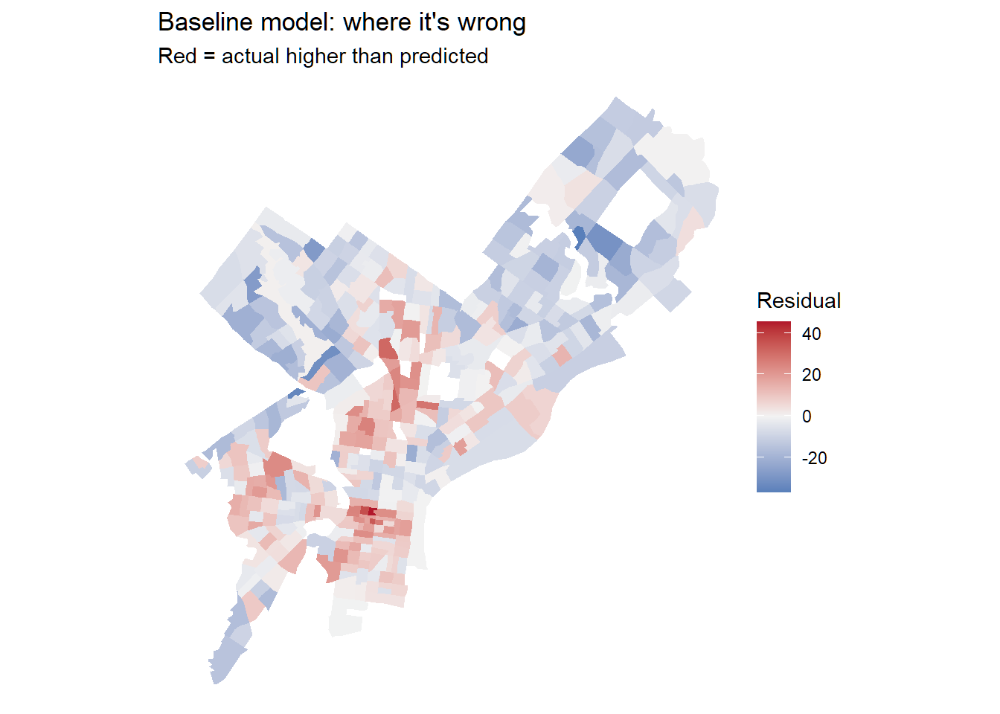
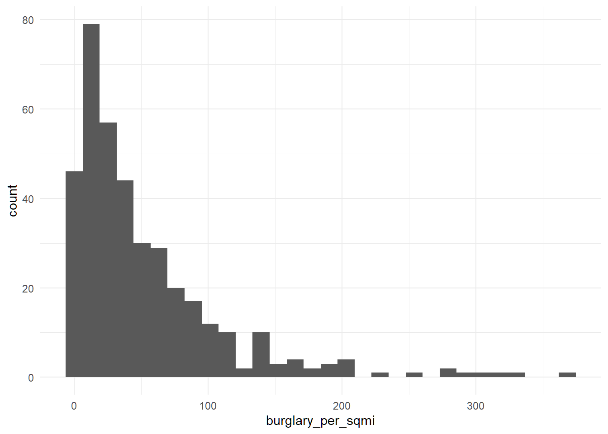
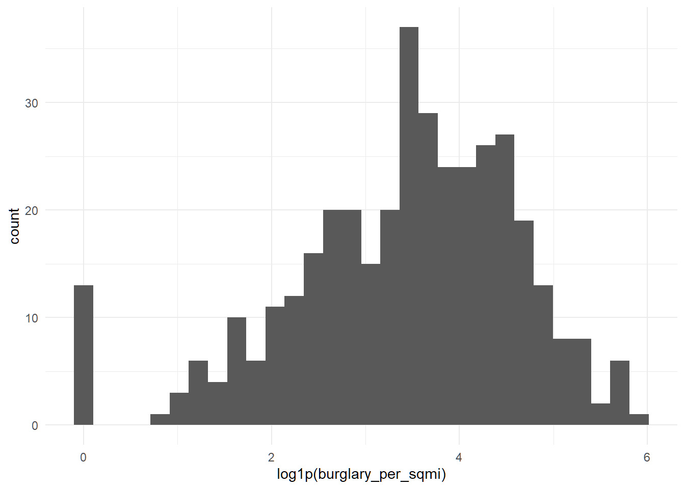
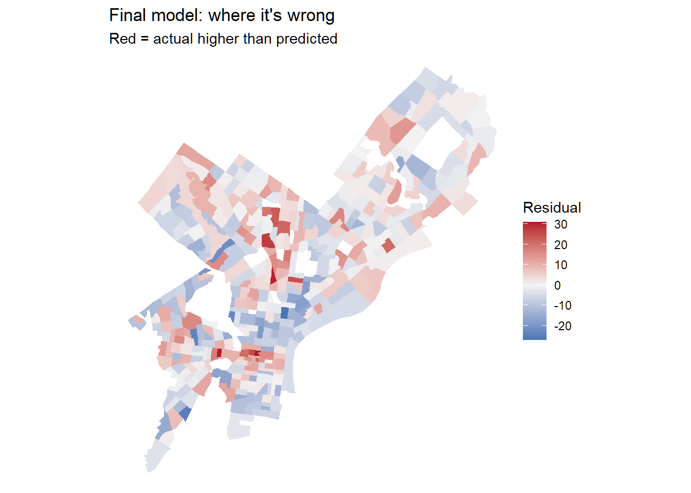
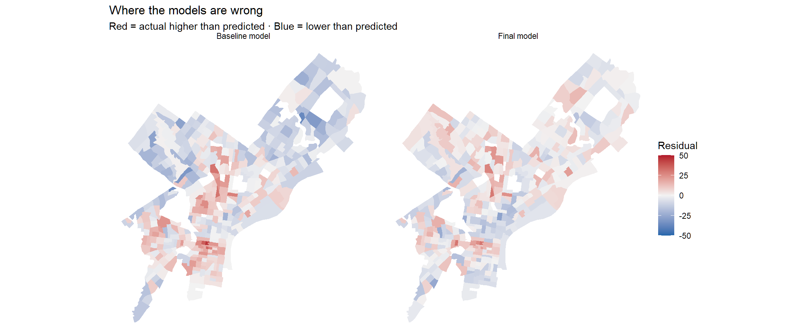
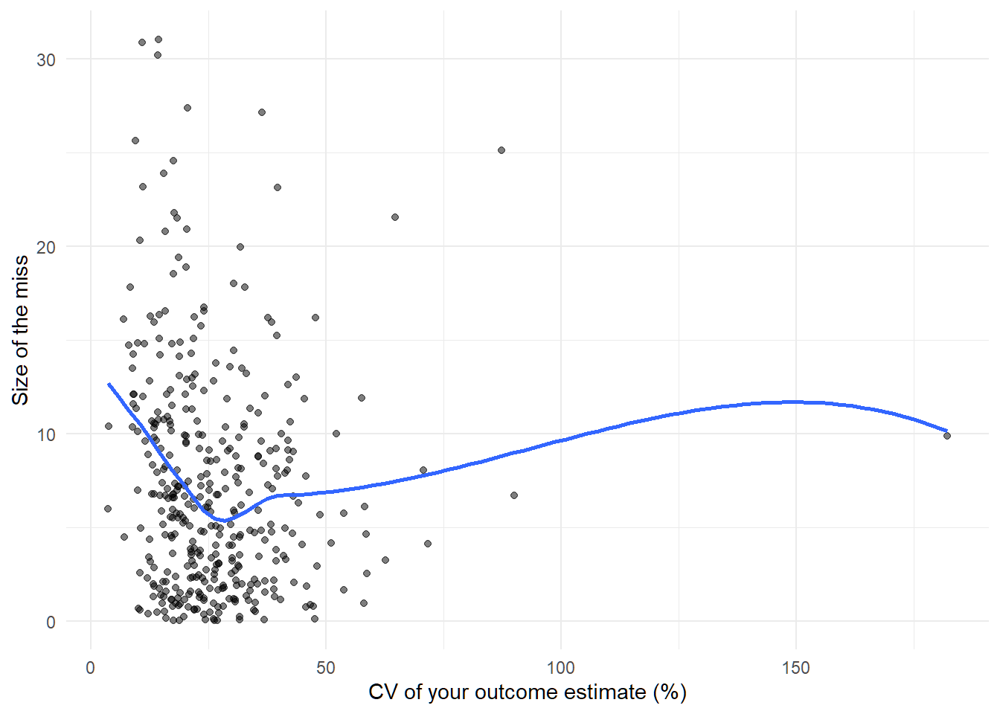

Code
library(tidyverse)
library(tidycensus)
library(sf)
library(caret)
Sys.getenv("CENSUS_API_KEY") != "" # should print TRUE[1] TRUEMUSA 5080 · Integrates Weeks 1–5 · Due Friday, October 16
Terry Boxuan Xu
October 10, 2026
This is not a competition. There’s no leaderboard and no target RMSE. The goal is to practice the full prediction workflow on a question you choose, and to find out what actually helps. Some features you’re sure will help won’t, and some you add on a whim will. Both are findings.
You’ll:
Timing. Parts 1–4 use only what we’ve covered through Week 5. You can finish them before the October 9 lecture. Part 5 is new material; the lecture explains it, and the instructions below give you the essentials.
Type the code yourself. The worked examples show the pattern. Your job is to apply it to your outcome and your data choices.
[1] TRUEThis function runs 10-fold cross-validation with the same seed every time, so every model in your log is tested on the same folds. You don’t need to change it. Read it once so you know what it does.
ctrl <- trainControl(method = "cv", number = 10)
cv_rmse <- function(formula, data) {
df <- if (inherits(data, "sf")) st_drop_geometry(data) else data
vars <- all.vars(formula)
bad <- vars[sapply(vars, function(v) any(is.na(df[[v]])))]
if (length(bad) > 0) {
stop("These variables have NAs: ", paste(bad, collapse = ", "),
". Fill them or choose another variable (Rule 1: don't drop rows).")
}
set.seed(5080)
fit <- train(formula, data = df, method = "lm", trControl = ctrl)
fit$results$RMSE
}Every time you fit a new model, add a row. By the end, this table is the story of your assignment.
Pick a tract-level ACS variable for Philadelphia that matters for policy. Two outcomes are off limits: median gross rent (we did it in lab) and median home value (save it for A4).
This analysis predicts the percentage of households without access to a vehicle in each Philadelphia Census tract. This outcome is relevant to transportation planning because neighborhoods with more households without vehicles may depend more heavily on public transit, walking, and biking. The outcome uses ACS table B08201.
Some ideas if you’re stuck:
| Outcome | Why an agency might care | ACS table |
|---|---|---|
| % of households with no vehicle | Transit planning | B08201 or B25044 |
| Mean travel time to work | Access to jobs | B08013_001 ÷ B08303_001 |
| % of people below poverty | Targeting services | B17001 |
| % of housing units vacant | Housing and blight | B25002 |
| % of households overcrowded | Housing conditions | B25014 |
Use load_variables(2023, "acs5") to browse and find exact variable codes.
Choose three to five ACS predictors for your baseline model. They should be things that plausibly relate to your outcome, but none of them may be built from your outcome (Rule 3).
philly_tracts <- get_acs(
geography = "tract",
state = "PA",
county = "Philadelphia",
variables = c(
total_pop = "B01003_001",
hh_total = "B08201_001",
hh_no_vehicle = "B08201_002",
med_inc = "B19013_001",
occupied = "B25003_001",
renter = "B25003_003",
edu_total = "B15003_001",
bachelors = "B15003_022",
masters = "B15003_023",
professional = "B15003_024",
doctorate = "B15003_025"
),
year = 2023,
output = "wide",
geometry = TRUE
) %>%
st_transform(2272)
|
| | 0%
|
|= | 2%
|
|== | 3%
|
|=== | 4%
|
|=== | 5%
|
|==== | 6%
|
|===== | 7%
|
|===== | 8%
|
|====== | 8%
|
|====== | 9%
|
|======= | 10%
|
|======== | 11%
|
|======== | 12%
|
|========= | 13%
|
|========== | 14%
|
|=========== | 15%
|
|=========== | 16%
|
|============ | 17%
|
|============= | 19%
|
|============== | 20%
|
|============== | 21%
|
|=============== | 22%
|
|================ | 23%
|
|================ | 24%
|
|================= | 25%
|
|================== | 25%
|
|=================== | 26%
|
|=================== | 27%
|
|==================== | 28%
|
|===================== | 29%
|
|===================== | 30%
|
|====================== | 31%
|
|======================= | 32%
|
|======================= | 33%
|
|======================== | 34%
|
|========================= | 35%
|
|========================= | 36%
|
|========================== | 37%
|
|=========================== | 38%
|
|=========================== | 39%
|
|============================ | 40%
|
|============================= | 41%
|
|============================== | 42%
|
|============================== | 43%
|
|=============================== | 44%
|
|================================ | 45%
|
|================================ | 46%
|
|================================= | 47%
|
|================================== | 48%
|
|================================== | 49%
|
|=================================== | 50%
|
|==================================== | 51%
|
|==================================== | 52%
|
|===================================== | 53%
|
|====================================== | 54%
|
|====================================== | 55%
|
|======================================= | 56%
|
|======================================== | 57%
|
|======================================== | 58%
|
|========================================= | 59%
|
|========================================== | 60%
|
|=========================================== | 61%
|
|=========================================== | 62%
|
|============================================ | 63%
|
|============================================= | 64%
|
|============================================= | 65%
|
|============================================== | 66%
|
|=============================================== | 67%
|
|=============================================== | 68%
|
|================================================ | 69%
|
|================================================= | 70%
|
|================================================= | 71%
|
|================================================== | 72%
|
|=================================================== | 73%
|
|==================================================== | 74%
|
|==================================================== | 75%
|
|===================================================== | 76%
|
|====================================================== | 77%
|
|====================================================== | 78%
|
|======================================================= | 79%
|
|======================================================== | 80%
|
|======================================================== | 81%
|
|========================================================= | 82%
|
|========================================================== | 83%
|
|=========================================================== | 84%
|
|=========================================================== | 85%
|
|============================================================ | 86%
|
|============================================================= | 87%
|
|============================================================== | 88%
|
|============================================================== | 89%
|
|=============================================================== | 90%
|
|================================================================ | 91%
|
|================================================================ | 92%
|
|================================================================= | 93%
|
|================================================================== | 94%
|
|================================================================== | 95%
|
|=================================================================== | 96%
|
|==================================================================== | 97%
|
|==================================================================== | 98%
|
|===================================================================== | 99%
|
|======================================================================| 100%philly_tracts <- philly_tracts %>%
mutate(
# build your outcome, e.g. a percentage:
y = hh_no_vehicleE / hh_totalE * 100,
# and its reliability. For a percentage, use tidycensus::moe_prop();
# for a median or count, use the E and M columns directly.
y_moe = tidycensus::moe_prop(
hh_no_vehicleE,
hh_totalE,
hh_no_vehicleM,
hh_totalM
) * 100,
y_cv = (y_moe / 1.645) / y * 100,
# your predictors:
pct_renter = renterE / occupiedE * 100,
pct_ba = (
bachelorsE + mastersE + professionalE + doctorateE
) / edu_totalE * 100
)Before you commit, check three things.
[1] 20 Min. 1st Qu. Median Mean 3rd Qu. Max. NAs
3.572 17.204 23.410 Inf 31.959 Inf 20 reliability n
1 High 29
2 Low 66
3 Moderate 313
If more than about a third of tracts have low reliability, consider a different outcome, or one built from larger counts. Write your reasoning either way.
Answer (2–3 sentences): What is your outcome, why would an agency want to predict it, and how reliable is it?
The outcome is the percentage of households without access to a vehicle in each Philadelphia Census tract. A transportation agency may want to predict this percentage to identify communities that depend more heavily on public transit, walking, or biking. Most tracts have moderately reliable estimates, with 29 classified as High reliability, 313 as Moderate, and 66 as Low, so I decided to continue using this outcome while recognizing that some tract estimates are uncertain.
Filter once, here, and never again. Every later step uses tracts.
[1] 408[1] 381Answer: How many tracts did you lose, and what kinds of places are they?
I removed 27 tracts, leaving 381 tracts for every model. Most of the excluded areas were zero-population 9800-series tracts, while several populated or very small-population tracts were removed because the ACS did not provide a usable outcome or baseline predictor, especially median household income.
Plot your outcome against each predictor before modeling (the Week 3 habit).



Call:
lm(formula = f1, data = tracts)
Residuals:
Min 1Q Median 3Q Max
-36.639 -8.375 -1.162 8.346 45.551
Coefficients:
Estimate Std. Error t value Pr(>|t|)
(Intercept) 1.773e+01 2.854e+00 6.214 1.37e-09 ***
med_incE -1.792e-04 3.821e-05 -4.689 3.84e-06 ***
pct_renter 3.885e-01 4.152e-02 9.355 < 2e-16 ***
pct_ba 9.888e-02 5.015e-02 1.972 0.0494 *
---
Signif. codes: 0 '***' 0.001 '**' 0.01 '*' 0.05 '.' 0.1 ' ' 1
Residual standard error: 12.37 on 377 degrees of freedom
Multiple R-squared: 0.428, Adjusted R-squared: 0.4234
F-statistic: 94.03 on 3 and 377 DF, p-value: < 2.2e-16# A tibble: 1 × 4
model added cv_rmse notes
<chr> <chr> <dbl> <chr>
1 m1 ACS baseline 12.5 Income, renter share, and educationOn tracts it hasn’t seen, the baseline model misses by about 12.5 percentage points.
Save this map. You’ll compare it to your final model’s map in Part 6.
tracts <- tracts %>% mutate(resid_m1 = residuals(m1))
ggplot(tracts) +
geom_sf(aes(fill = resid_m1), color = NA) +
scale_fill_gradient2(low = "#2166ac", mid = "grey95", high = "#b2182b", midpoint = 0) +
theme_void() +
labs(title = "Baseline model: where it's wrong",
subtitle = "Red = actual higher than predicted",
fill = "Residual")
Answer: Where do the residuals cluster? What might those places have in common that your model doesn’t know about? Use this answer to choose your open data layers in Part 3.
The residuals are spatially clustered rather than randomly scattered. Downtown has several red tracts, possibly because its density, transit access, and limited parking make living without a vehicle easier than the baseline model predicts. Red clusters in West and North Philadelphia may also be influenced by the large student populations around Penn and Temple, which the model does not directly measure.
Many of the city’s datasets on OpenDataPhilly are served through a Carto SQL API. You send a SQL query in a URL, and it sends back data. Ask for format=GeoJSON and st_read() reads the result directly, just like the Indego feed in Week 4.
The pattern:
https://phl.carto.com/api/v2/sql?format=GeoJSON&q=SELECT ... FROM table_name WHERE ...Three pieces of SQL are all you need:
SELECT the_geom, column1, column2 chooses which columns come back. Always include the_geom, or you get no geometry.FROM table_name chooses the dataset.WHERE ... filters rows. Filter in the query, not in R. Some tables have millions of rows, and pulling everything will be slow or fail.This helper builds the URL for you. Spaces and symbols in a URL need encoding, and URLencode() handles that.
On a dataset’s OpenDataPhilly page, look for the API link. The table name is the word after FROM in the example query. To see what values a column takes before you filter on it, ask for a count in CSV format:
# What kinds of crime are in the incidents table in 2023?
url <- paste0("https://phl.carto.com/api/v2/sql?format=csv&q=",
URLencode("SELECT text_general_code, COUNT(*) AS n
FROM incidents_part1_part2
WHERE dispatch_date >= '2023-01-01' AND dispatch_date < '2024-01-01'
GROUP BY text_general_code ORDER BY n DESC"))
read_csv(url)# A tibble: 32 × 2
text_general_code n
<chr> <dbl>
1 Thefts 37054
2 Other Assaults 25986
3 Motor Vehicle Theft 22478
4 Vandalism/Criminal Mischief 17346
5 All Other Offenses 13334
6 Theft from Vehicle 13002
7 Fraud 7661
8 Aggravated Assault No Firearm 5134
9 Burglary Residential 3800
10 Aggravated Assault Firearm 3320
# ℹ 22 more rowsburglary <- carto_get(
"SELECT the_geom, text_general_code, dispatch_date
FROM incidents_part1_part2
WHERE dispatch_date >= '2023-01-01' AND dispatch_date < '2024-01-01'
AND text_general_code = 'Burglary Residential'"
) %>%
st_transform(st_crs(tracts)) # Carto returns EPSG 4326; translate immediately
nrow(burglary)[1] 3800These tables were available on Carto as of this fall. If a query fails, check the dataset’s OpenDataPhilly page for the current table name.
| Data | Table | Filter on | Notes |
|---|---|---|---|
| Crime incidents | incidents_part1_part2 |
dispatch_date, text_general_code |
Pick specific offense types |
| Shooting victims | shootings |
date_ |
Small enough to pull several years |
| 311 requests | public_cases_fc |
requested_datetime, service_name |
Use the count query above to see service names |
| Indego stations | (not Carto) https://www.rideindego.com/stations/json/ |
— | The Week 4 feed |
Datasets not on Carto often have a GeoJSON download link on their OpenDataPhilly page. st_read() reads those URLs too. For example, navigage to https://opendataphilly.org/, find a dataset that you’d like to import. I found city landmarks. On the page there is a link to a GeoJSON file. I simply right-clicked on that hyperlink and copied it and then used st_read() and pasted the link:
landmarks <- st_read(“https://hub.arcgis.com/api/v3/datasets/6b2fe4a0fbe14e0a8e6afceaea230b8e_0/downloads/data?format=geojson&spatialRefId=4326&where=1%3D1”)
Pull at least two layers that you think relate to your outcome. Base your choice on your Part 2C answer.
layer1 <- carto_get(
"SELECT the_geom, text_general_code, dispatch_date
FROM incidents_part1_part2
WHERE dispatch_date >= '2023-01-01'
AND dispatch_date < '2024-01-01'
AND text_general_code = 'Burglary Residential'"
) %>%
st_transform(st_crs(tracts))
layer2 <- st_read(
"https://www.rideindego.com/stations/json/",
quiet = TRUE
) %>%
st_transform(st_crs(tracts))[1] 119[1] 0[1] 3681[1] 319Answer: Why these layers? What do you expect them to capture that the ACS variables don’t?
I chose residential burglaries and Indego stations because they represent neighborhood conditions that the baseline ACS variables do not directly measure. Residential burglaries provide a measure of public-safety conditions, while Indego stations represent access to bike sharing and an alternative to private vehicles. I expect Indego access to help explain some of the higher-than-predicted percentages of households without vehicles in central and university-area tracts.
Every feature below reuses a Week 4 tool. The worked examples use burglaries and Indego stations; you build the same types from your own layers.
How many burglaries fall in each tract?
Min. 1st Qu. Median Mean 3rd Qu. Max.
0.000 4.000 7.000 9.446 13.000 48.000 A tract with no burglaries gets 0, not NA, so Rule 1 is safe.
Raw counts mostly measure tract size. A big tract has more of everything. Normalize by area, by population, or by housing units, depending on what makes sense for the thing you’re counting.
How far is each tract from its nearest Indego station? Use the Week 4 pattern: find the nearest feature, then measure to it element by element.
stations <- st_read("https://www.rideindego.com/stations/json/", quiet = TRUE) %>%
st_transform(st_crs(tracts))
tract_pts <- st_point_on_surface(tracts) # always inside the tract, unlike a centroid
nearest_idx <- st_nearest_feature(tract_pts, stations)
tracts <- tracts %>%
mutate(dist_station_mi = as.numeric(
st_distance(tract_pts, stations[nearest_idx, ], by_element = TRUE)) / 5280)Sometimes the “thing” is a single location, such as City Hall as a stand-in for the center of the regional economy.
Build at least three spatial features from your own layers, and use at least two types (count, density, nearest distance, distance to a place). After each one, fit a model, cross-validate it, and log it.
tracts <- tracts %>%
mutate(
n_burglary = lengths(st_intersects(., layer1))
)
f2 <- y ~ med_incE + pct_renter + pct_ba + n_burglary
model_log <- model_log %>%
add_row(model = "m2", added = "Burglary count",
cv_rmse = cv_rmse(f2, tracts),
notes = "Raw count of 2023 residential burglaries"
)
# repeat for each feature
model_log# A tibble: 2 × 4
model added cv_rmse notes
<chr> <chr> <dbl> <chr>
1 m1 ACS baseline 12.5 Income, renter share, and education
2 m2 Burglary count 12.1 Raw count of 2023 residential burglariestracts <- tracts %>%
mutate(
burglary_per_sqmi = n_burglary / area_sqmi
)
f3 <- y ~ med_incE + pct_renter + pct_ba + burglary_per_sqmi
model_log <- model_log %>%
add_row(
model = "m3",
added = "Burglary density",
cv_rmse = cv_rmse(f3, tracts),
notes = "Residential burglaries per square mile"
)
model_log# A tibble: 3 × 4
model added cv_rmse notes
<chr> <chr> <dbl> <chr>
1 m1 ACS baseline 12.5 Income, renter share, and education
2 m2 Burglary count 12.1 Raw count of 2023 residential burglaries
3 m3 Burglary density 11.5 Residential burglaries per square mile # A tibble: 4 × 4
model added cv_rmse notes
<chr> <chr> <dbl> <chr>
1 m1 ACS baseline 12.5 Income, renter share, and education
2 m2 Burglary count 12.1 Raw count of 2023 residential burglaries
3 m3 Burglary density 11.5 Residential burglaries per square mile
4 m4 Distance to Indego 11.2 Distance to nearest Indego station in milesAnswer: Which spatial feature helped most? Did any feature you expected to help do nothing, or make CV RMSE worse? Why might that be?
Distance to the nearest Indego station helped the most, reducing CV RMSE from 12.46 in the baseline model to 11.22. Burglary density also improved prediction and performed better than the raw burglary count, probably because density accounts for differences in tract size. None of the three features made prediction worse, but the raw count helped the least because larger tracts can contain more incidents simply because they cover more area.
Watch the October 9 recorded lecture before you start this part. Below is a summary to work from.
So far, every predictor has entered the model as a straight line: each additional unit of X changes predicted Y by the same amount, everywhere. Transformations let the model bend. For prediction, the question is simply does the bend lower CV RMSE? For interpretation, each transformation changes what a coefficient means, so you need to know how to read it.
Many urban variables are skewed: a few tracts have huge values, and most have small ones. Income, density, and counts are typical. A log compresses the long tail, so a model can use the difference between 1 and 10 as well as the difference between 100 and 1,000.


Reading the coefficient: when a predictor is logged, a 1% increase in X goes with a change of about β/100 in Y, in Y’s units. With log1p, this reading is approximate for small values of X.
If your scatterplot bends (rising and then flattening, or falling and then rising), a squared term lets the line curve. Write it with I(), which tells R to do the arithmetic rather than read ^ as formula syntax.
Call:
lm(formula = y ~ dist_ch_mi + I(dist_ch_mi^2), data = tracts)
Residuals:
Min 1Q Median 3Q Max
-27.721 -8.549 -0.983 7.699 43.547
Coefficients:
Estimate Std. Error t value Pr(>|t|)
(Intercept) 45.62849 1.78168 25.610 < 2e-16 ***
dist_ch_mi -4.14563 0.64648 -6.413 4.27e-10 ***
I(dist_ch_mi^2) 0.09331 0.04854 1.922 0.0553 .
---
Signif. codes: 0 '***' 0.001 '**' 0.01 '*' 0.05 '.' 0.1 ' ' 1
Residual standard error: 12.87 on 378 degrees of freedom
Multiple R-squared: 0.3792, Adjusted R-squared: 0.3759
F-statistic: 115.4 on 2 and 378 DF, p-value: < 2.2e-16Reading the coefficient: you can’t read either coefficient alone anymore. The effect of X depends on where you are along X. A positive linear term with a negative squared term means Y rises with X and then levels off or turns down. Plot the fitted curve to see it:
Sometimes a number works better as groups, either because the relationship isn’t smooth or because the categories are meaningful. You can make categories from any variable with case_when() or cut(), and then make sure R treats them as a factor.
ring n
1 Core 79
2 Inner 134
3 Outer 168
Call:
lm(formula = y ~ ring, data = tracts)
Residuals:
Min 1Q Median 3Q Max
-33.724 -10.328 -1.487 8.377 42.965
Coefficients:
Estimate Std. Error t value Pr(>|t|)
(Intercept) 38.461 1.521 25.289 <2e-16 ***
ringInner -3.650 1.917 -1.904 0.0577 .
ringOuter -20.512 1.844 -11.123 <2e-16 ***
---
Signif. codes: 0 '***' 0.001 '**' 0.01 '*' 0.05 '.' 0.1 ' ' 1
Residual standard error: 13.52 on 378 degrees of freedom
Multiple R-squared: 0.3154, Adjusted R-squared: 0.3118
F-statistic: 87.09 on 2 and 378 DF, p-value: < 2.2e-16Reading the coefficients: R turns a factor with k categories into k − 1 dummy variables. The category left out is the reference level (here, “Core,” the first level). Each coefficient is the difference from the reference: ringOuter is how much higher or lower predicted Y is in outer tracts compared to core tracts, holding everything else in the model constant. To change the reference, use relevel(ring, ref = "Outer").
Try at least one of each: a log, a squared term, and a categorical variable. Choose which variables to transform based on your plots, not at random. Log each model.
# A tibble: 5 × 4
model added cv_rmse notes
<chr> <chr> <dbl> <chr>
1 m1 ACS baseline 12.5 Income, renter share, and education
2 m2 Burglary count 12.1 Raw count of 2023 residential burglaries
3 m3 Burglary density 11.5 Residential burglaries per square mile
4 m4 Distance to Indego 11.2 Distance to nearest Indego station in miles
5 m5 Log burglary density 11.6 Logged residential burglaries per square m…# A tibble: 6 × 4
model added cv_rmse notes
<chr> <chr> <dbl> <chr>
1 m1 ACS baseline 12.5 Income, renter share, and education
2 m2 Burglary count 12.1 Raw count of 2023 residential burgla…
3 m3 Burglary density 11.5 Residential burglaries per square mi…
4 m4 Distance to Indego 11.2 Distance to nearest Indego station i…
5 m5 Log burglary density 11.6 Logged residential burglaries per sq…
6 m6 Squared City Hall distance 9.76 Distance to City Hall with a curved …
Call:
lm(formula = f_cat, data = tracts)
Residuals:
Min 1Q Median 3Q Max
-26.859 -6.406 -0.845 5.357 35.711
Coefficients:
Estimate Std. Error t value Pr(>|t|)
(Intercept) 4.267e+01 3.380e+00 12.624 < 2e-16 ***
med_incE -1.768e-04 3.194e-05 -5.536 5.82e-08 ***
pct_renter 2.611e-01 3.582e-02 7.289 1.86e-12 ***
pct_ba -4.747e-02 4.389e-02 -1.082 0.28
ringInner -1.100e+01 1.839e+00 -5.985 5.07e-09 ***
ringOuter -2.195e+01 1.818e+00 -12.075 < 2e-16 ***
---
Signif. codes: 0 '***' 0.001 '**' 0.01 '*' 0.05 '.' 0.1 ' ' 1
Residual standard error: 10.27 on 375 degrees of freedom
Multiple R-squared: 0.6078, Adjusted R-squared: 0.6026
F-statistic: 116.3 on 5 and 375 DF, p-value: < 2.2e-16# A tibble: 7 × 4
model added cv_rmse notes
<chr> <chr> <dbl> <chr>
1 m1 ACS baseline 12.5 Income, renter share, and educati…
2 m2 Burglary count 12.1 Raw count of 2023 residential bur…
3 m3 Burglary density 11.5 Residential burglaries per square…
4 m4 Distance to Indego 11.2 Distance to nearest Indego statio…
5 m5 Log burglary density 11.6 Logged residential burglaries per…
6 m6 Squared City Hall distance 9.76 Distance to City Hall with a curv…
7 m7 City Hall distance categories 10.4 Core, Inner, and Outer distance r…Answer: Which transformation helped most? For your categorical variable, write one sentence reading one of its coefficients correctly, naming the reference level.
The squared City Hall distance transformation helped the most, producing the lowest CV RMSE of 9.76, compared with 12.46 for the baseline model. Using Core tracts as the reference level, Outer tracts are predicted to have about 21.95 percentage points fewer households without vehicles, holding median income, renter percentage, and educational attainment constant.
Combine the features and transformations that earned their place, judged by CV RMSE, not p-values.
Call:
lm(formula = f_final, data = tracts)
Residuals:
Min 1Q Median 3Q Max
-27.1423 -6.5585 -0.4957 5.5514 31.0399
Coefficients:
Estimate Std. Error t value Pr(>|t|)
(Intercept) 48.6104296 3.5758672 13.594 < 2e-16 ***
med_incE -0.0001655 0.0000300 -5.516 6.48e-08 ***
pct_renter 0.2216451 0.0340194 6.515 2.35e-10 ***
pct_ba -0.0613994 0.0416636 -1.474 0.1414
burglary_per_sqmi 0.0264734 0.0101398 2.611 0.0094 **
dist_station_mi -1.2498126 0.8348057 -1.497 0.1352
dist_ch_mi -5.7994481 0.6339676 -9.148 < 2e-16 ***
I(dist_ch_mi^2) 0.3326357 0.0719010 4.626 5.14e-06 ***
---
Signif. codes: 0 '***' 0.001 '**' 0.01 '*' 0.05 '.' 0.1 ' ' 1
Residual standard error: 9.528 on 373 degrees of freedom
Multiple R-squared: 0.6644, Adjusted R-squared: 0.6581
F-statistic: 105.5 on 7 and 373 DF, p-value: < 2.2e-16# A tibble: 8 × 4
model added cv_rmse notes
<chr> <chr> <dbl> <chr>
1 m1 ACS baseline 12.5 Income, renter share…
2 m2 Burglary count 12.1 Raw count of 2023 re…
3 m3 Burglary density 11.5 Residential burglari…
4 m4 Distance to Indego 11.2 Distance to nearest …
5 m5 Log burglary density 11.6 Logged residential b…
6 m6 Squared City Hall distance 9.76 Distance to City Hal…
7 m7 City Hall distance categories 10.4 Core, Inner, and Out…
8 final Best spatial features and squared distance 9.71 Raw burglary density…tracts <- tracts %>% mutate(resid_final = residuals(m_final))
ggplot(tracts) +
geom_sf(aes(fill = resid_final), color = NA) +
scale_fill_gradient2(low = "#2166ac", mid = "grey95", high = "#b2182b", midpoint = 0) +
theme_void() +
labs(title = "Final model: where it's wrong",
subtitle = "Red = actual higher than predicted",
fill = "Residual")
Put your two residual maps side by side, or put them next to each other in the rendered document. Did the clusters from Part 2C shrink? Where did they stay?
map_data <- bind_rows(
tracts %>%
mutate(
model = "Baseline model",
residual = resid_m1
),
tracts %>%
mutate(
model = "Final model",
residual = resid_final
)
)
ggplot(map_data) +
geom_sf(aes(fill = residual), color = NA) +
facet_wrap(~model, nrow = 1) +
scale_fill_gradient2(
low = "#2166ac",
mid = "grey95",
high = "#b2182b",
midpoint = 0,
limits = c(-50, 50)
) +
theme_void() +
labs(
title = "Where the models are wrong",
subtitle = "Red = actual higher than predicted · Blue = lower than predicted",
fill = "Residual"
)
The final model reduces some of the strongest residuals, with the maximum positive error falling from roughly 40 to 30 percentage points. Some northern and northeastern tracts become lighter, but errors remain spatially clustered around central, western, and southwestern Philadelphia. This suggests that the new spatial features helped, but the model still does not capture every local condition affecting household vehicle access.

Answer in prose, drawing on your model log (incorporate our words of the day for bonus points. just kidding):
In this analysis, I predicted the percentage of households without a vehicle across Philadelphia Census tracts. The squared City Hall distance helped the most, lowering CV RMSE from 12.46 in the baseline model to 9.76. This suggests that vehicle access changes with distance from the city center in a curved pattern rather than at one constant rate. The final model, which also included burglary density and distance to an Indego station, lowered RMSE slightly further to 9.71. The log transformation of burglary density disappointed me most. Although logging made the distribution appear more balanced, its RMSE was 11.64, slightly worse than the 11.53 produced by raw burglary density. A cleaner-looking distribution therefore did not automatically produce better predictions.
The estimated β̂ for renter percentage is 0.222, holding median income, educational attainment, burglary density, and the spatial variables constant. In ŷ terms, a tract with a renter share one percentage point higher is predicted to have about 0.22 percentage points more households without vehicles, assuming the other variables remain unchanged.
The final residual map shows smaller errors than the baseline map, but errors are still spatially clustered in parts of central, western, and southwestern Philadelphia. One missing feature may be the quality and frequency of public transportation. Indego stations measure bike-share proximity, but they do not represent subway, trolley, or bus service. I would obtain transit-stop locations and service-frequency information from SEPTA’s GTFS data and test whether better transit access explains the remaining clusters.
Finally, the uncertainty plot shows that prediction errors gradually increase at higher outcome CV values, although only a few tracts have extremely high CVs. Large errors also appear among tracts with relatively reliable estimates. Therefore, ACS uncertainty likely explains part of the remaining error, but the model is also missing neighborhood characteristics that influence whether households own vehicles.
---
title: "Assignment 4: Building Features, Watching What Happens"
subtitle: "MUSA 5080 · Integrates Weeks 1–5 · Due Friday, October 16"
author: "Terry Boxuan Xu"
date: 2026-10-10
format:
html:
toc: true
code-fold: show
code-tools: true
execute:
warning: false
message: false
freeze: false
---
## What this assignment is (and isn't)
This is **not a competition.** There's no leaderboard and no target RMSE. The goal is to practice the full prediction workflow on a question you choose, and to **find out what actually helps.** Some features you're sure will help won't, and some you add on a whim will. Both are findings.
You'll:
1. Choose a tract-level outcome for Philadelphia and check whether it's reliable enough to model (Weeks 2–3).
2. Fit a baseline model and cross-validate it (Week 5).
3. Pull data from Philadelphia's open data portal through its API and build spatial features: counts, densities, and distances (Week 4, plus one new tool).
4. Transform variables with logs, squared terms, and categories. **Watch the October 9 recorded lecture before Part 5.**
5. Keep a **model log** the whole way through, and compare where your first and final models go wrong.
**Timing.** Parts 1–4 use only what we've covered through Week 5. You can finish them before the October 9 lecture. Part 5 is new material; the lecture explains it, and the instructions below give you the essentials.
**Type the code yourself.** The worked examples show the pattern. Your job is to apply it to your outcome and your data choices.
### Three rules that apply everywhere
---
## Part 0: Setup
```{r}
#| label: setup
library(tidyverse)
library(tidycensus)
library(sf)
library(caret)
Sys.getenv("CENSUS_API_KEY") != "" # should print TRUE
```
### The cross-validation helper
This function runs 10-fold cross-validation with the same seed every time, so every model in your log is tested on the same folds. **You don't need to change it.** Read it once so you know what it does.
```{r}
#| label: cv-helper
ctrl <- trainControl(method = "cv", number = 10)
cv_rmse <- function(formula, data) {
df <- if (inherits(data, "sf")) st_drop_geometry(data) else data
vars <- all.vars(formula)
bad <- vars[sapply(vars, function(v) any(is.na(df[[v]])))]
if (length(bad) > 0) {
stop("These variables have NAs: ", paste(bad, collapse = ", "),
". Fill them or choose another variable (Rule 1: don't drop rows).")
}
set.seed(5080)
fit <- train(formula, data = df, method = "lm", trControl = ctrl)
fit$results$RMSE
}
```
### The model log
Every time you fit a new model, add a row. By the end, this table is the story of your assignment.
```{r}
#| label: log-start
model_log <- tibble(
model = character(),
added = character(),
cv_rmse = numeric(),
notes = character()
)
```
---
## Part 1: Choose your outcome
Pick a **tract-level ACS variable for Philadelphia** that matters for policy. Two outcomes are off limits: median gross rent (we did it in lab) and median home value (save it for A4).
This analysis predicts the percentage of households without access to a vehicle in each Philadelphia Census tract. This outcome is relevant to transportation planning because neighborhoods with more households without vehicles may depend more heavily on public transit, walking, and biking. The outcome uses ACS table B08201.
Some ideas if you're stuck:
| Outcome | Why an agency might care | ACS table |
|---|---|---|
| % of households with no vehicle | Transit planning | B08201 or B25044 |
| Mean travel time to work | Access to jobs | B08013_001 ÷ B08303_001 |
| % of people below poverty | Targeting services | B17001 |
| % of housing units vacant | Housing and blight | B25002 |
| % of households overcrowded | Housing conditions | B25014 |
Use `load_variables(2023, "acs5")` to browse and find exact variable codes.
### 1A: Pull your outcome and your baseline predictors
Choose **three to five ACS predictors** for your baseline model. They should be things that plausibly relate to your outcome, but **none of them may be built from your outcome** (Rule 3).
```{r}
#| label: pull
philly_tracts <- get_acs(
geography = "tract",
state = "PA",
county = "Philadelphia",
variables = c(
total_pop = "B01003_001",
hh_total = "B08201_001",
hh_no_vehicle = "B08201_002",
med_inc = "B19013_001",
occupied = "B25003_001",
renter = "B25003_003",
edu_total = "B15003_001",
bachelors = "B15003_022",
masters = "B15003_023",
professional = "B15003_024",
doctorate = "B15003_025"
),
year = 2023,
output = "wide",
geometry = TRUE
) %>%
st_transform(2272)
```
```{r}
#| label: build-outcome
philly_tracts <- philly_tracts %>%
mutate(
# build your outcome, e.g. a percentage:
y = hh_no_vehicleE / hh_totalE * 100,
# and its reliability. For a percentage, use tidycensus::moe_prop();
# for a median or count, use the E and M columns directly.
y_moe = tidycensus::moe_prop(
hh_no_vehicleE,
hh_totalE,
hh_no_vehicleM,
hh_totalM
) * 100,
y_cv = (y_moe / 1.645) / y * 100,
# your predictors:
pct_renter = renterE / occupiedE * 100,
pct_ba = (
bachelorsE + mastersE + professionalE + doctorateE
) / edu_totalE * 100
)
```
### 1B: Is it reliable enough to model?
Before you commit, check three things.
```{r}
#| label: reliability
# How many tracts have no value for your outcome?
sum(is.na(philly_tracts$y))
# How reliable is it?
summary(philly_tracts$y_cv)
philly_tracts %>%
mutate(reliability = case_when(
y_cv < 12 ~ "High",
y_cv <= 40 ~ "Moderate",
TRUE ~ "Low"
)) %>%
st_drop_geometry() %>%
count(reliability)
# What does the distribution look like?
ggplot(philly_tracts, aes(x = y)) +
geom_histogram(bins = 30) +
theme_minimal()
```
If more than about a third of tracts have low reliability, consider a different outcome, or one built from larger counts. Write your reasoning either way.
**Answer (2–3 sentences):** What is your outcome, why would an agency want to predict it, and how reliable is it?
The outcome is the percentage of households without access to a vehicle in each Philadelphia Census tract. A transportation agency may want to predict this percentage to identify communities that depend more heavily on public transit, walking, or biking. Most tracts have moderately reliable estimates, with 29 classified as High reliability, 313 as Moderate, and 66 as Low, so I decided to continue using this outcome while recognizing that some tract estimates are uncertain.
### 1C: Decide which tracts to model
Filter once, here, and never again. Every later step uses `tracts`.
```{r}
#| label: filter
tracts <- philly_tracts %>%
filter(
total_popE > 0,
!is.na(y),
!is.na(med_incE),
!is.na(pct_renter),
!is.na(pct_ba)
)
nrow(philly_tracts)
nrow(tracts)
```
**Answer:** How many tracts did you lose, and what kinds of places are they?
I removed 27 tracts, leaving 381 tracts for every model. Most of the excluded areas were zero-population 9800-series tracts, while several populated or very small-population tracts were removed because the ACS did not provide a usable outcome or baseline predictor, especially median household income.
---
## Part 2: Baseline model
### 2A: Look first
Plot your outcome against each predictor before modeling (the Week 3 habit).
```{r}
#| label: look
ggplot(tracts, aes(x = med_incE, y = y)) +
geom_point(alpha = 0.5) +
geom_smooth(method = "lm", se = FALSE) +
theme_minimal()
ggplot(tracts, aes(x = pct_renter, y = y)) +
geom_point(alpha = 0.5) +
geom_smooth(method = "lm", se = FALSE) +
theme_minimal()
ggplot(tracts, aes(x = pct_ba, y = y)) +
geom_point(alpha = 0.5) +
geom_smooth(method = "lm", se = FALSE) +
theme_minimal()
```
### 2B: Fit and log
```{r}
#| label: m1
f1 <- y ~ med_incE + pct_renter + pct_ba
m1 <- lm(f1, data = tracts)
summary(m1)
model_log <- model_log %>%
add_row(
model = "m1",
added = "ACS baseline",
cv_rmse = cv_rmse(f1, tracts),
notes = "Income, renter share, and education"
)
model_log
```
On tracts it hasn't seen, the baseline model misses by about 12.5 percentage points.
### 2C: Where is the baseline wrong?
Save this map. You'll compare it to your final model's map in Part 6.
```{r}
#| label: resid-map-1
tracts <- tracts %>% mutate(resid_m1 = residuals(m1))
ggplot(tracts) +
geom_sf(aes(fill = resid_m1), color = NA) +
scale_fill_gradient2(low = "#2166ac", mid = "grey95", high = "#b2182b", midpoint = 0) +
theme_void() +
labs(title = "Baseline model: where it's wrong",
subtitle = "Red = actual higher than predicted",
fill = "Residual")
```
**Answer:** Where do the residuals cluster? What might those places have in common that your model doesn't know about? **Use this answer to choose your open data layers in Part 3.**
The residuals are spatially clustered rather than randomly scattered. Downtown has several red tracts, possibly because its density, transit access, and limited parking make living without a vehicle easier than the baseline model predicts. Red clusters in West and North Philadelphia may also be influenced by the large student populations around Penn and Temple, which the model does not directly measure.
---
## Part 3: Getting data from Philadelphia's open data portal
Many of the city's datasets on [OpenDataPhilly](https://opendataphilly.org) are served through a **Carto SQL API**. You send a SQL query in a URL, and it sends back data. Ask for `format=GeoJSON` and `st_read()` reads the result directly, just like the Indego feed in Week 4.
The pattern:
```
https://phl.carto.com/api/v2/sql?format=GeoJSON&q=SELECT ... FROM table_name WHERE ...
```
Three pieces of SQL are all you need:
- `SELECT the_geom, column1, column2` chooses which columns come back. **Always include `the_geom`**, or you get no geometry.
- `FROM table_name` chooses the dataset.
- `WHERE ...` filters rows. **Filter in the query, not in R.** Some tables have millions of rows, and pulling everything will be slow or fail.
This helper builds the URL for you. Spaces and symbols in a URL need encoding, and `URLencode()` handles that.
```{r}
#| label: carto-helper
carto_get <- function(sql) {
url <- paste0("https://phl.carto.com/api/v2/sql?format=GeoJSON&q=", URLencode(sql))
st_read(url, quiet = TRUE)
}
```
### Finding a table name
On a dataset's OpenDataPhilly page, look for the API link. The table name is the word after `FROM` in the example query. To see what values a column takes before you filter on it, ask for a count in CSV format:
```{r}
#| label: explore-values
# What kinds of crime are in the incidents table in 2023?
url <- paste0("https://phl.carto.com/api/v2/sql?format=csv&q=",
URLencode("SELECT text_general_code, COUNT(*) AS n
FROM incidents_part1_part2
WHERE dispatch_date >= '2023-01-01' AND dispatch_date < '2024-01-01'
GROUP BY text_general_code ORDER BY n DESC"))
read_csv(url)
```
### Worked example: residential burglaries in 2023
```{r}
#| label: worked-burglary
burglary <- carto_get(
"SELECT the_geom, text_general_code, dispatch_date
FROM incidents_part1_part2
WHERE dispatch_date >= '2023-01-01' AND dispatch_date < '2024-01-01'
AND text_general_code = 'Burglary Residential'"
) %>%
st_transform(st_crs(tracts)) # Carto returns EPSG 4326; translate immediately
nrow(burglary)
```
### Other layers to try
These tables were available on Carto as of this fall. If a query fails, check the dataset's OpenDataPhilly page for the current table name.
| Data | Table | Filter on | Notes |
|---|---|---|---|
| Crime incidents | `incidents_part1_part2` | `dispatch_date`, `text_general_code` | Pick specific offense types |
| Shooting victims | `shootings` | `date_` | Small enough to pull several years |
| 311 requests | `public_cases_fc` | `requested_datetime`, `service_name` | Use the count query above to see service names |
| Indego stations | *(not Carto)* `https://www.rideindego.com/stations/json/` | — | The Week 4 feed |
Datasets not on Carto often have a GeoJSON download link on their OpenDataPhilly page. `st_read()` reads those URLs too.
For example, navigage to https://opendataphilly.org/, find a dataset that you'd like to import. I found city landmarks. On the page there is a link to a GeoJSON file. I simply right-clicked on that hyperlink and copied it and then used st_read() and pasted the link:
landmarks <- st_read("https://hub.arcgis.com/api/v3/datasets/6b2fe4a0fbe14e0a8e6afceaea230b8e_0/downloads/data?format=geojson&spatialRefId=4326&where=1%3D1")
### Your turn
Pull **at least two layers** that you think relate to your outcome. Base your choice on your Part 2C answer.
```{r}
#| label: my-layers
layer1 <- carto_get(
"SELECT the_geom, text_general_code, dispatch_date
FROM incidents_part1_part2
WHERE dispatch_date >= '2023-01-01'
AND dispatch_date < '2024-01-01'
AND text_general_code = 'Burglary Residential'"
) %>%
st_transform(st_crs(tracts))
layer2 <- st_read(
"https://www.rideindego.com/stations/json/",
quiet = TRUE
) %>%
st_transform(st_crs(tracts))
```
```{r}
#| label: layer-check
sum(st_is_empty(layer1))
sum(st_is_empty(layer2))
layer1 <- layer1 %>%
filter(!st_is_empty(layer1))
layer2 <- layer2 %>%
filter(!st_is_empty(layer2))
nrow(layer1)
nrow(layer2)
```
**Answer:** Why these layers? What do you expect them to capture that the ACS variables don't?
I chose residential burglaries and Indego stations because they represent neighborhood conditions that the baseline ACS variables do not directly measure. Residential burglaries provide a measure of public-safety conditions, while Indego stations represent access to bike sharing and an alternative to private vehicles. I expect Indego access to help explain some of the higher-than-predicted percentages of households without vehicles in central and university-area tracts.
---
## Part 4: Building spatial features
Every feature below reuses a Week 4 tool. The worked examples use burglaries and Indego stations; you build the same types from your own layers.
### 4A: Counting
How many burglaries fall in each tract?
```{r}
#| label: count
tracts <- tracts %>%
mutate(n_burglary = lengths(st_intersects(., burglary)))
summary(tracts$n_burglary)
```
A tract with no burglaries gets 0, not NA, so Rule 1 is safe.
### 4B: Density: don't skip this
Raw counts mostly measure **tract size**. A big tract has more of everything. Normalize by area, by population, or by housing units, depending on what makes sense for the thing you're counting.
```{r}
#| label: density
tracts <- tracts %>%
mutate(
area_sqmi = as.numeric(st_area(.)) / 27878400, # sq ft in a sq mile
burglary_per_sqmi = n_burglary / area_sqmi,
burglary_per_1k = n_burglary / total_popE * 1000
)
```
### 4C: Measuring distance to the nearest thing
How far is each tract from its nearest Indego station? Use the Week 4 pattern: find the nearest feature, then measure to it **element by element**.
```{r}
#| label: nearest
stations <- st_read("https://www.rideindego.com/stations/json/", quiet = TRUE) %>%
st_transform(st_crs(tracts))
tract_pts <- st_point_on_surface(tracts) # always inside the tract, unlike a centroid
nearest_idx <- st_nearest_feature(tract_pts, stations)
tracts <- tracts %>%
mutate(dist_station_mi = as.numeric(
st_distance(tract_pts, stations[nearest_idx, ], by_element = TRUE)) / 5280)
```
### 4D: Measuring distance to one place
Sometimes the "thing" is a single location, such as City Hall as a stand-in for the center of the regional economy.
```{r}
#| label: city-hall
city_hall <- st_sfc(st_point(c(-75.1636, 39.9526)), crs = 4326) %>%
st_transform(st_crs(tracts))
tracts <- tracts %>%
mutate(dist_ch_mi = as.numeric(st_distance(tract_pts, city_hall)) / 5280)
```
### 4E: Your turn
Build **at least three spatial features** from your own layers, and use at least two types (count, density, nearest distance, distance to a place). After **each one**, fit a model, cross-validate it, and log it.
```{r}
#| label: my-spatial
tracts <- tracts %>%
mutate(
n_burglary = lengths(st_intersects(., layer1))
)
f2 <- y ~ med_incE + pct_renter + pct_ba + n_burglary
model_log <- model_log %>%
add_row(model = "m2", added = "Burglary count",
cv_rmse = cv_rmse(f2, tracts),
notes = "Raw count of 2023 residential burglaries"
)
# repeat for each feature
model_log
```
```{r}
tracts <- tracts %>%
mutate(
burglary_per_sqmi = n_burglary / area_sqmi
)
f3 <- y ~ med_incE + pct_renter + pct_ba + burglary_per_sqmi
model_log <- model_log %>%
add_row(
model = "m3",
added = "Burglary density",
cv_rmse = cv_rmse(f3, tracts),
notes = "Residential burglaries per square mile"
)
model_log
```
```{r}
f4 <- y ~ med_incE + pct_renter + pct_ba + dist_station_mi
model_log <- model_log %>%
add_row(
model = "m4",
added = "Distance to Indego",
cv_rmse = cv_rmse(f4, tracts),
notes = "Distance to nearest Indego station in miles"
)
model_log
```
**Answer:** Which spatial feature helped most? Did any feature you expected to help do nothing, or make CV RMSE worse? Why might that be?
Distance to the nearest Indego station helped the most, reducing CV RMSE from 12.46 in the baseline model to 11.22. Burglary density also improved prediction and performed better than the raw burglary count, probably because density accounts for differences in tract size. None of the three features made prediction worse, but the raw count helped the least because larger tracts can contain more incidents simply because they cover more area.
---
## Part 5: Transforming features
**Watch the October 9 recorded lecture before you start this part.** Below is a summary to work from.
So far, every predictor has entered the model as a straight line: each additional unit of X changes predicted Y by the same amount, everywhere. Transformations let the model bend. For prediction, the question is simply **does the bend lower CV RMSE?** For interpretation, each transformation changes what a coefficient means, so you need to know how to read it.
### 5A: Logs, for skewed predictors
Many urban variables are skewed: a few tracts have huge values, and most have small ones. Income, density, and counts are typical. A log compresses the long tail, so a model can use the difference between 1 and 10 as well as the difference between 100 and 1,000.
```{r}
#| label: log-look
ggplot(tracts, aes(x = burglary_per_sqmi)) + geom_histogram(bins = 30) + theme_minimal()
ggplot(tracts, aes(x = log1p(burglary_per_sqmi))) + geom_histogram(bins = 30) + theme_minimal()
```
**Reading the coefficient:** when a predictor is logged, a **1% increase** in X goes with a change of about **β/100** in Y, in Y's units. With `log1p`, this reading is approximate for small values of X.
### 5B: Squared terms, for curves
If your scatterplot bends (rising and then flattening, or falling and then rising), a squared term lets the line curve. Write it with `I()`, which tells R to do the arithmetic rather than read `^` as formula syntax.
```{r}
#| label: squared-example
m_sq <- lm(y ~ dist_ch_mi + I(dist_ch_mi^2), data = tracts)
summary(m_sq)
```
**Reading the coefficient:** you can't read either coefficient alone anymore. The effect of X depends on where you are along X. A positive linear term with a negative squared term means Y rises with X and then levels off or turns down. Plot the fitted curve to see it:
```{r}
#| label: squared-plot
ggplot(tracts, aes(x = dist_ch_mi, y = y)) +
geom_point(alpha = 0.4) +
geom_smooth(method = "lm", formula = y ~ x + I(x^2), se = FALSE, color = "red") +
theme_minimal()
```
### 5C: Categorical variables
Sometimes a number works better as groups, either because the relationship isn't smooth or because the categories are meaningful. You can make categories from any variable with `case_when()` or `cut()`, and then make sure R treats them as a **factor**.
```{r}
#| label: categorical-example
tracts <- tracts %>%
mutate(
ring = case_when(
dist_ch_mi < 2 ~ "Core",
dist_ch_mi < 5 ~ "Inner",
TRUE ~ "Outer"
),
ring = factor(ring, levels = c("Core", "Inner", "Outer"))
)
tracts %>% st_drop_geometry() %>% count(ring)
m_cat <- lm(y ~ ring, data = tracts)
summary(m_cat)
```
**Reading the coefficients:** R turns a factor with k categories into k − 1 dummy variables. The category left out is the **reference level** (here, "Core," the first level). Each coefficient is the **difference from the reference**: `ringOuter` is how much higher or lower predicted Y is in outer tracts *compared to core tracts*, holding everything else in the model constant. To change the reference, use `relevel(ring, ref = "Outer")`.
### 5D: Your turn
Try **at least one of each**: a log, a squared term, and a categorical variable. Choose which variables to transform based on your plots, not at random. Log each model.
```{r}
#| label: my-transforms
f_log <- y ~ med_incE + pct_renter + pct_ba +
log1p(burglary_per_sqmi)
model_log <- model_log %>%
add_row(model = "m5", added = "Log burglary density",
cv_rmse = cv_rmse(f_log, tracts),
notes = "Logged residential burglaries per square mile")
# squared term
# categorical
model_log
```
```{r}
f_sq <- y ~ med_incE + pct_renter + pct_ba +
dist_ch_mi + I(dist_ch_mi^2)
model_log <- model_log %>%
add_row(
model = "m6",
added = "Squared City Hall distance",
cv_rmse = cv_rmse(f_sq, tracts),
notes = "Distance to City Hall with a curved relationship"
)
model_log
```
```{r}
f_cat <- y ~ med_incE + pct_renter + pct_ba + ring
m7 <- lm(f_cat, data = tracts)
summary(m7)
model_log <- model_log %>%
add_row(
model = "m7",
added = "City Hall distance categories",
cv_rmse = cv_rmse(f_cat, tracts),
notes = "Core, Inner, and Outer distance rings"
)
model_log
```
**Answer:** Which transformation helped most? For your categorical variable, write one sentence reading one of its coefficients correctly, naming the reference level.
The squared City Hall distance transformation helped the most, producing the lowest CV RMSE of 9.76, compared with 12.46 for the baseline model. Using Core tracts as the reference level, Outer tracts are predicted to have about 21.95 percentage points fewer households without vehicles, holding median income, renter percentage, and educational attainment constant.
---
## Part 6: Your final model
Combine the features and transformations that earned their place, **judged by CV RMSE, not p-values.**
```{r}
#| label: final
f_final <- y ~ med_incE + pct_renter + pct_ba +
burglary_per_sqmi +
dist_station_mi +
dist_ch_mi + I(dist_ch_mi^2)
m_final <- lm(f_final, data = tracts)
summary(m_final)
model_log <- model_log %>%
add_row(model = "final", added = "Best spatial features and squared distance",
cv_rmse = cv_rmse(f_final, tracts),
notes = "Raw burglary density, Indego distance, and curved City Hall distance")
model_log
```
### Where is the final model wrong?
```{r}
#| label: resid-map-2
tracts <- tracts %>% mutate(resid_final = residuals(m_final))
ggplot(tracts) +
geom_sf(aes(fill = resid_final), color = NA) +
scale_fill_gradient2(low = "#2166ac", mid = "grey95", high = "#b2182b", midpoint = 0) +
theme_void() +
labs(title = "Final model: where it's wrong",
subtitle = "Red = actual higher than predicted",
fill = "Residual")
```
Put your two residual maps side by side, or put them next to each other in the rendered document. Did the clusters from Part 2C shrink? Where did they stay?
```{r}
#| label: residual-maps-comparison
#| fig-width: 12
#| fig-height: 5
map_data <- bind_rows(
tracts %>%
mutate(
model = "Baseline model",
residual = resid_m1
),
tracts %>%
mutate(
model = "Final model",
residual = resid_final
)
)
ggplot(map_data) +
geom_sf(aes(fill = residual), color = NA) +
facet_wrap(~model, nrow = 1) +
scale_fill_gradient2(
low = "#2166ac",
mid = "grey95",
high = "#b2182b",
midpoint = 0,
limits = c(-50, 50)
) +
theme_void() +
labs(
title = "Where the models are wrong",
subtitle = "Red = actual higher than predicted · Blue = lower than predicted",
fill = "Residual"
)
```
The final model reduces some of the strongest residuals, with the maximum positive error falling from roughly 40 to 30 percentage points. Some northern and northeastern tracts become lighter, but errors remain spatially clustered around central, western, and southwestern Philadelphia. This suggests that the new spatial features helped, but the model still does not capture every local condition affecting household vehicle access.
### Are the biggest misses in the least reliable tracts?
```{r}
#| label: fog
ggplot(tracts, aes(x = y_cv, y = abs(resid_final))) +
geom_point(alpha = 0.5) +
geom_smooth(se = FALSE) +
labs(x = "CV of your outcome estimate (%)", y = "Size of the miss") +
theme_minimal()
```
---
## Part 7: Reflection (about 300 words)
Answer in prose, drawing on your model log (incorporate our words of the day for bonus points. just kidding):
1. **What helped, and what didn't?** Name the feature that lowered CV RMSE the most and the one that disappointed you most. Offer a reason for each.
2. **Read one coefficient twice.** Choose a variable in your final model. Give its β̂ reading and its ŷ reading in one sentence each.
3. **What's still missing?** Look at your final residual map. Name one thing about those places you'd want to measure next, and where you might get the data.
4. **How much of the remaining error might be uncertainty or statistical noise?** Use your last plot.
In this analysis, I predicted the percentage of households without a vehicle across Philadelphia Census tracts. The squared City Hall distance helped the most, lowering CV RMSE from 12.46 in the baseline model to 9.76. This suggests that vehicle access changes with distance from the city center in a curved pattern rather than at one constant rate. The final model, which also included burglary density and distance to an Indego station, lowered RMSE slightly further to 9.71. The log transformation of burglary density disappointed me most. Although logging made the distribution appear more balanced, its RMSE was 11.64, slightly worse than the 11.53 produced by raw burglary density. A cleaner-looking distribution therefore did not automatically produce better predictions.
The estimated β̂ for renter percentage is 0.222, holding median income, educational attainment, burglary density, and the spatial variables constant. In ŷ terms, a tract with a renter share one percentage point higher is predicted to have about 0.22 percentage points more households without vehicles, assuming the other variables remain unchanged.
The final residual map shows smaller errors than the baseline map, but errors are still spatially clustered in parts of central, western, and southwestern Philadelphia. One missing feature may be the quality and frequency of public transportation. Indego stations measure bike-share proximity, but they do not represent subway, trolley, or bus service. I would obtain transit-stop locations and service-frequency information from SEPTA’s GTFS data and test whether better transit access explains the remaining clusters.
Finally, the uncertainty plot shows that prediction errors gradually increase at higher outcome CV values, although only a few tracts have extremely high CVs. Large errors also appear among tracts with relatively reliable estimates. Therefore, ACS uncertainty likely explains part of the remaining error, but the model is also missing neighborhood characteristics that influence whether households own vehicles.
---